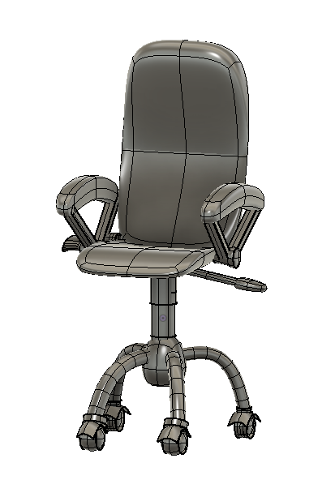
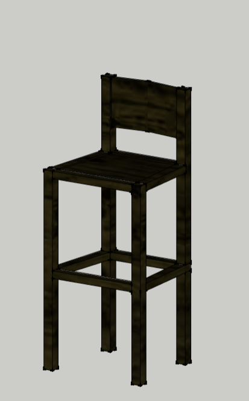
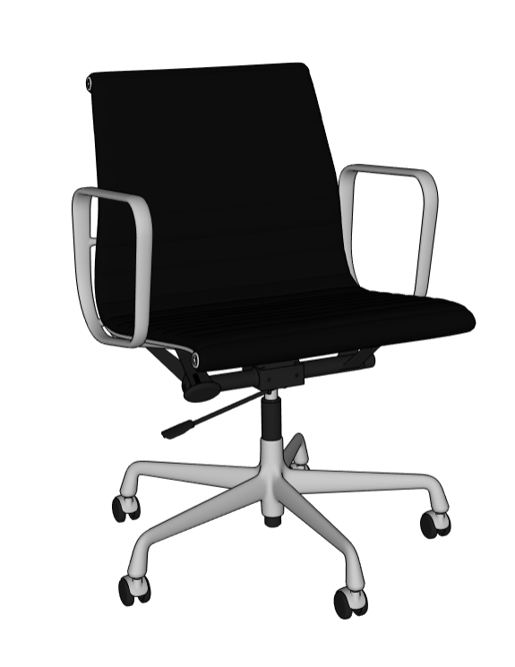

椅子の種類
オフィスワークの椅子 |
事務所に椅子が欲しいと思っている人向けの商品です。 椅子のタイヤがコンパクトで、ひかっかることは、ありません。 高さも調節できるから、あなたの求める仕事環境が実現されます |
立ち仕事の椅子 |
立ち仕事の時、ちょっと座る用の椅子です。 すぐ立てる状態なので便利です。 意外につかいがってがいい！！ |
オーソドックスな椅子 |
スタンダードで無難な椅子 使いやすい作りになっています 意外につかいがってがいい！！ |